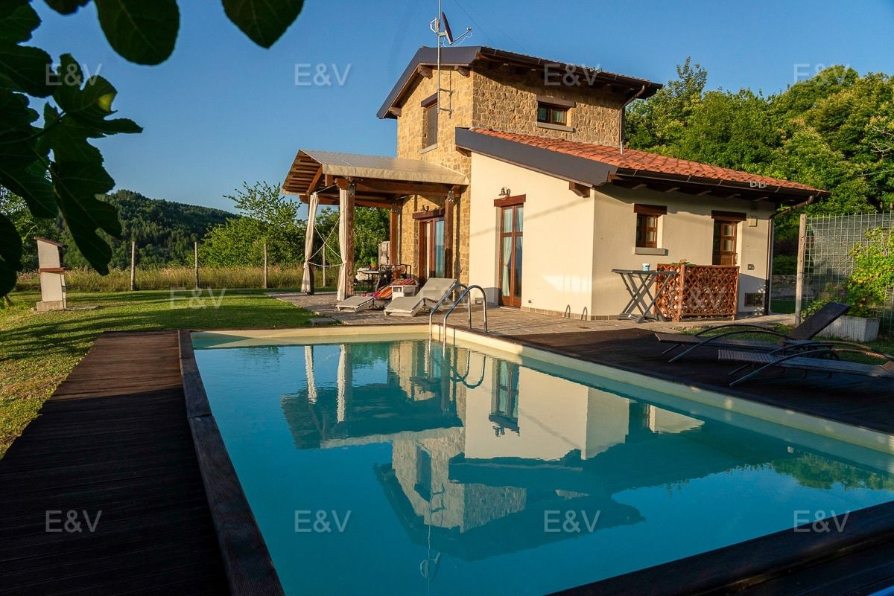

€300.000
Casentino / Arezzo · Tuscany · Italy
True stone farmhouse character with a private pool at €300k (rare under-€400k Tuscan stone+pool hideaway). Compact (1 bed / ~98 m²) but punches hard as a cozy design-forward retreat.
Opened 18 Sep 2026 on Engel & Völkers Arezzo; asking €300.000; 98 m² / 1 bed / 2 bath / land 1.900 m²; hasSwimmingPool true; ACTIVE. Stone farmhouse confirmed in body. Compact footprint noted.
Open listing